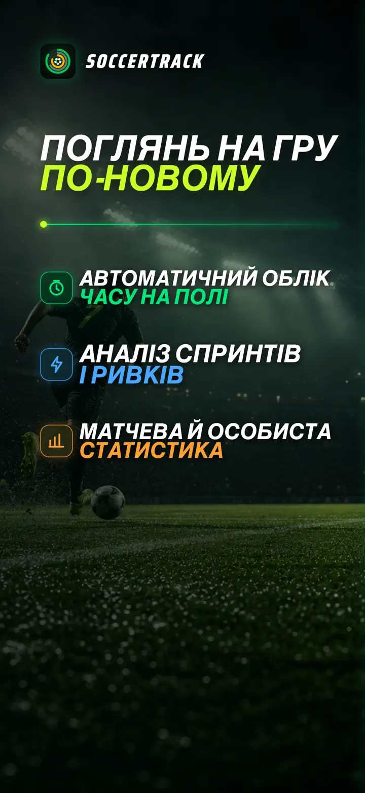
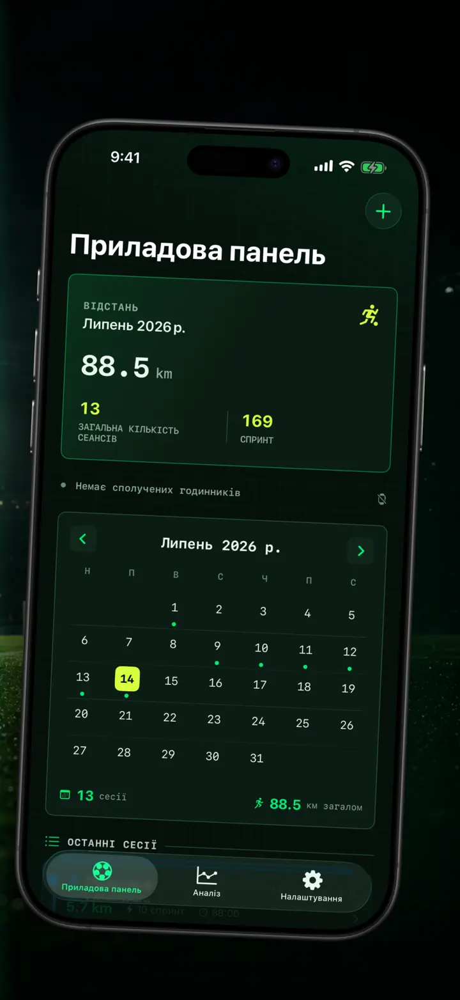
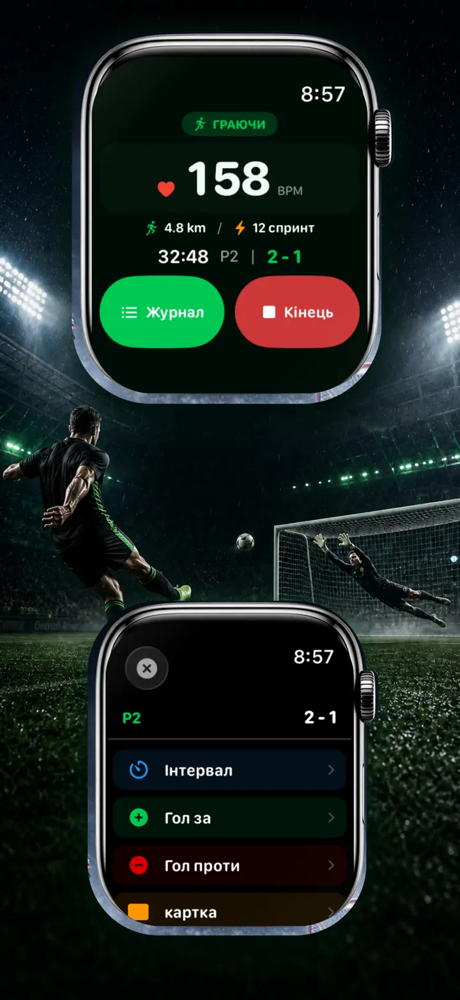
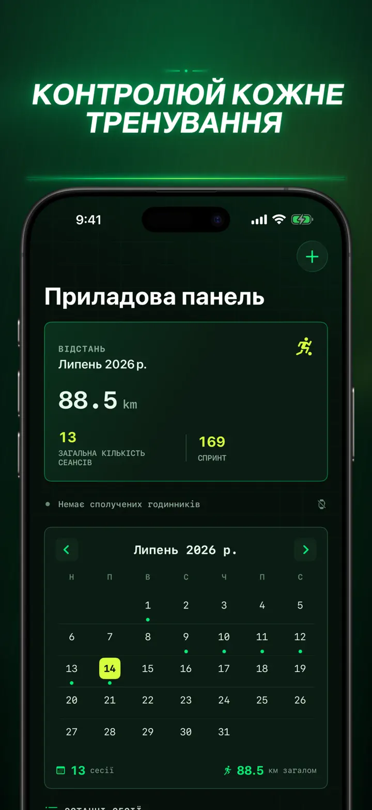
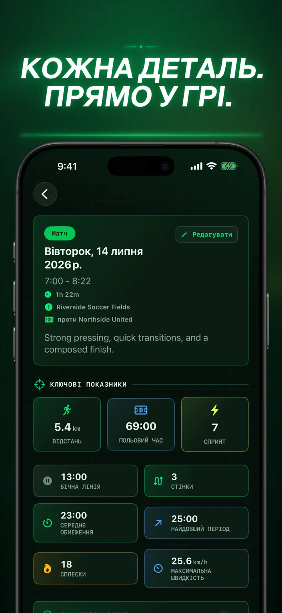
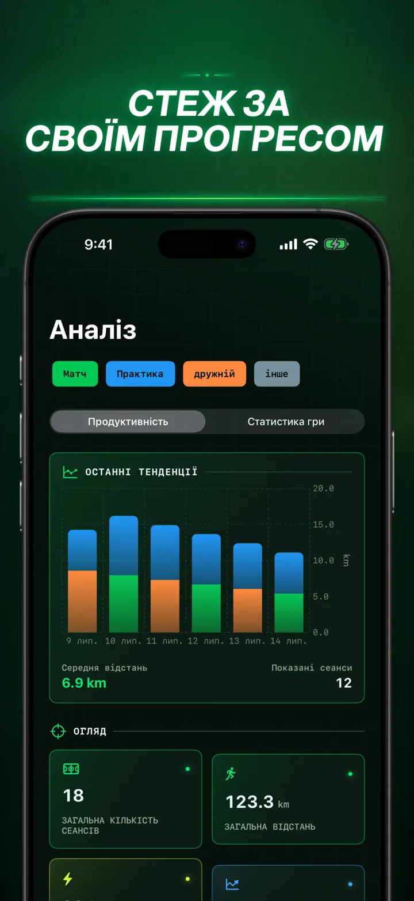
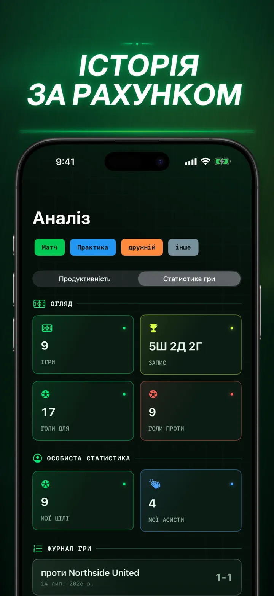
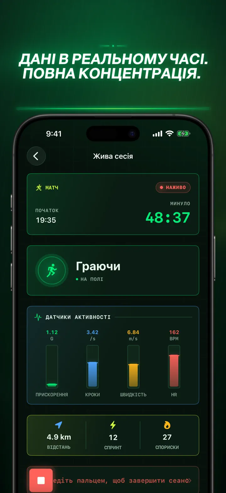
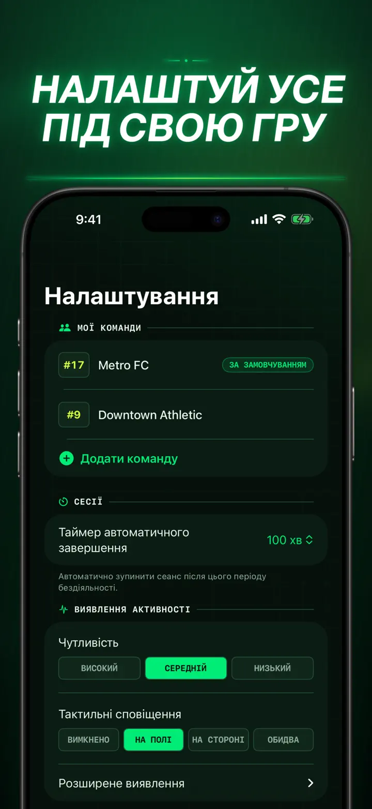
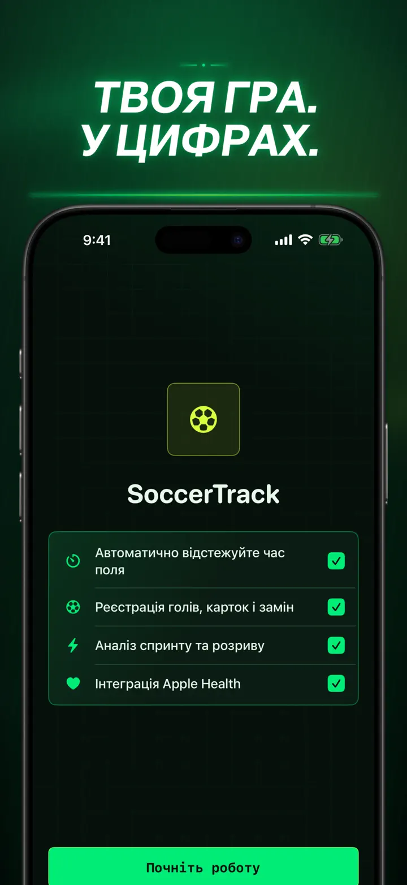

Soccer Time Track
Футбол: час і аналіз матчу
Запустіть тренування та грайте. Apple Watch сам відокремить час на полі від лави запасних і запише показники, спринти, події матчу й тенденції.
Завантажити з App Store
Про застосунок
Погляньте на свою гру інакше.
Soccer Time Track перетворює Apple Watch на помічника футболіста, якому важливий не лише фінальний рахунок. Запустіть тренування із зап’ястя, зосередьтеся на грі, а потім перегляньте докладну картину своєї ефективності на iPhone.
АВТОМАТИЧНИЙ ОБЛІК ЧАСУ НА ПОЛІ
Дізнайтеся, коли ви справді були в грі. Дані руху, тренування та геопозиції допомагають відрізнити гру, низьку активність і час на лаві запасних. Ви отримуєте:
- Час на полі та на лаві запасних
- Ігрові відрізки й зрозумілу часову шкалу
- Докладний розбір усього тренування
МАТЧ ІЗ ВАШОГО ЗАП’ЯСТЯ
Виберіть Матч, Тренування, Товариський матч або Інше. Під час гри відмічайте:
- Голи своєї команди та суперника
- Власні голи й результативні передачі
- Жовті та червоні картки
- Заміни й зміни періодів
ВАША ГРА В ЦИФРАХ
Дізнайтеся більше, ніж кількість хвилин:
- Дистанція
- Середня та максимальна швидкість
- Спринти й ривки високої інтенсивності
- Пульс і активні калорії
- Каденс і прискорення
ДАНІ НАЖИВО, ПОВНА ЗОСЕРЕДЖЕНІСТЬ
Під’єднаний iPhone може показувати показники наживо, поки Apple Watch продовжує записувати тренування. Ви зосереджені на матчі, а дані збираються у фоновому режимі.
СТЕЖТЕ ЗА ПРОГРЕСОМ
Зберігайте матчі, тренування, товариські зустрічі та інші заняття в одній історії. Переглядайте тенденції й особисті рекорди, порівнюйте результати та додавайте команду, номер форми, суперника, місце й нотатки, щоб зберегти контекст кожного матчу.
Потрібні дані в іншому місці? Експортуйте тренування, ігрові відрізки та події матчу у CSV або JSON.
ДЛЯ APPLE WATCH І APPLE HEALTH
З вашого дозволу Soccer Time Track використовує дані тренування, пульсу, руху та геопозиції для аналітики й зберігає завершені футбольні тренування в Apple Health. Для автоматичного відстеження потрібен Apple Watch. Тренування також можна додати вручну на iPhone.
ВАШІ ДАНІ, ВАША ГРА
Тренування залишаються на ваших пристроях і, якщо ввімкнено синхронізацію iCloud, у вашій приватній базі даних iCloud. Soccer Time Track не потребує облікового запису, не показує рекламу й не використовує сторонню аналітику.
Годі гадати, скільки ви грали. Дізнайтеся, як використали кожну хвилину.
Політика конфіденційності: https://masawata.net/SoccerTimeTrack/privacy-policy.html Умови використання: https://www.apple.com/legal/internet-services/itunes/dev/stdeula/
Знімки екрана









Soccer Time Track
Запустіть тренування та грайте. Apple Watch сам відокремить час на полі від лави запасних і запише показники, спринти, події матчу й тенденції.
Завантажити з App Store